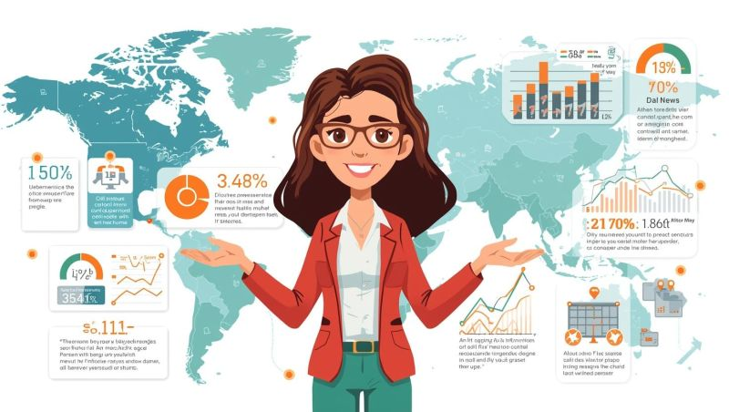

Ana Sayfa
Blog
Haftalık Bültenler
YouTube
İletişim
Haftalık Bültenler
Tüm Bültenler
22 Sep 2025
Verinin Dünyası 22 Eylül
15 Sep 2025
Verinin Dünyası 15 Eylül
08 Sep 2025
Verinin Dünyası 8 Eylül
01 Sep 2025
Verinin Dünyası 1 Eylül

25 Aug 2025
Verinin Dünyası 25 Ağustos
18 Aug 2025
Verinin Dünyası 18 Ağustos